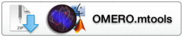

OMERO.mtools @VERSION@ Downloads
-
OMERO.mtools is a suite of tools written in MATLAB for various analyses of images stored in an OMERO server. Please see here for information.
Choose the version of OMERO.mtools for your platform (Windows/Macintosh) below
Ensure you have the correct MCR (MATLAB Compiler Runtime) installed on your system (currently 2013b, v8.2). If you do not, or are in any doubt, please also download the MCR for your platform below
The MCR must be installed before running OMERO.mtools
Once downloaded simply unzip and run. Running from a network drive is not recommended.
Source code is available on GitHub.
OMERO.mtools downloads
| Clients | Size | File Name | Checksum |
|---|---|---|---|
 |
@MTOOLS_WIN_SIZE@ | @MTOOLS_WIN_BASE@ | @MTOOLS_WIN_MD5@ (MD5) |
|  | @MTOOLS_MAC_SIZE@ | @MTOOLS_MAC_BASE@ | @MTOOLS_MAC_MD5@ (MD5) |
MCR downloads
| MCR |
|---|
 |
 |
Legacy versions
-
We recommend that you always use the most recent release version of OMERO.mtools, but if you need to use a previous version, they are all available from the main downloads folder